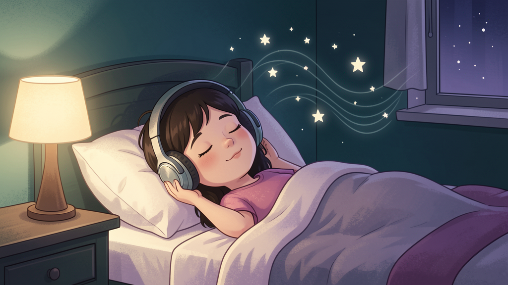

Cutting-edge Cognitive Pattern Reprogramming audio sessions designed to calm the nervous system and help your child break the cycle of Avoidant/Restrictive Food Intake Disorder — without battles, bribes, or pressure.
Start Listening Today Instant access · Cancel anytimeIf mealtimes have become a source of dread — the tears, the gagging, the same three "safe foods" on repeat — you're not failing, and your child isn't being difficult. ARFID is a nervous-system response, and it can be gently rewired.
ARFID is rooted in sensory sensitivity, fear of aversive consequences, or lack of interest. Logic doesn't change fear — neuroplasticity does.
We bypass conscious resistance using Strategic Hypnotherapy techniques to address the subconscious triggers causing food avoidance.
Mealtime anxiety creates a physical barrier to eating. Our audio guides regulate the autonomic nervous system, turning "fight or flight" into "rest and digest."
From sensory desensitization to appetite awareness, there are specific tracks for every stage of the recovery journey — most under 10 minutes.
Your membership unlocks our entire library of 300+ therapeutic audio sessions — covering the wide range of challenges parents face every single day.
One subscription. Support for the whole family, whatever this season of parenting brings.
School anxiety, social fears, separation worries, and general overwhelm.
Falling asleep, night waking, bedtime resistance, and calming routines.
Building resilience, trying new things, and quieting negative self-talk.
Emotional regulation, anger, frustration tolerance, and calming tools.
Concentration, motivation, test nerves, and homework battles.
Healthy boundaries, transitions away from screens, and impulse control.
Sibling rivalry, cooperation, and calmer household dynamics.
Your own stress, patience, and burnout — because you can't pour from an empty cup.
A two-minute message for every parent who has been told "they'll grow out of it" — and is still waiting.
Cognitive Pattern Reprogramming combines the principles of CBT (Cognitive Behavioral Therapy) with the deep relaxation of hypnotherapy.
By listening during relaxed states — like before bed or during quiet time — new neural pathways form. We aren't forcing food; we're removing the mental blocks that make food feel dangerous or unappealing.

"We tried everything. The Strategic Hypnotherapy approach was the missing link. My son actually asked to try a new texture last week without crying. It's subtle, but it works."
— Sarah J., Mom of an 8-year-old
"Dinner used to end in tears every night. Three weeks in, she's sitting at the table calmly — and last night she tried rice. RICE."
— Megan T., Mom of 6-year-old
"We came for the ARFID tracks but the sleep and anxiety sessions have been just as valuable. The whole house is calmer."
— David R., Dad of two
"No fights, no bribes. He asks to listen to 'his calm voice' before bed. His safe-food list grew from 4 foods to 11 in two months."
— Priya K., Mom of 10-year-old
Everything included. One plan. Cancel anytime.
Less than $1 a day for calmer mealtimes.
Most parents report calmer mealtimes within 2–4 weeks of consistent listening. New food acceptance typically follows as the nervous system learns food is safe.
Sessions are designed for children roughly ages 4–14, with guidance tracks to help parents support any age.
No. It's a complementary tool that works alongside professional care. Always consult your physician or a qualified provider about eating disorders.
Yes — one click in your account settings, no emails, no phone calls, no hassle.
Join thousands of families rewriting their food story — and gaining a library of support for every other challenge parenting brings.
Get Instant Access — $29.95/mo 300+ sessions · New tracks monthly · Cancel anytime